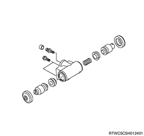
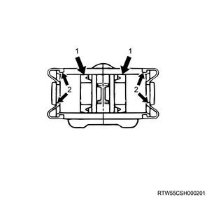
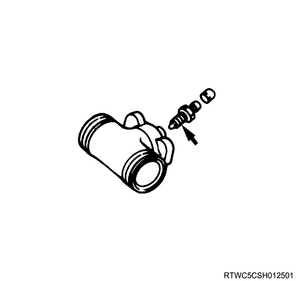

Note
- Clean the disassembled parts using brake fluid.
- Use air to clean the ports.
- After disassembling and before assembling, check part surfaces for dust or foreign material.
Caution
- Replace the specified parts with new ones.
1. Install the piston cup to the piston.
Note
- Apply brake fluid to the inside of the piston.
- Install the open side of the cup facing the inside of the piston.
Caution
- Pay attention to the direction of the cup and always use new parts.

2. Install the return spring to the cylinder body.
3. Install the boot to the piston.
Note
- Apply brake fluid to the inside of the boot.
- Apply rubber grease to the boot as shown in the diagram.

4. Install the bleeder screw to the cylinder body.
Tightening torque： 6 to 8 N・m { 0.6 to 0.8 kgf・m / 53 to 71 lb・in }

5. Install the cap to the bleeder screw.